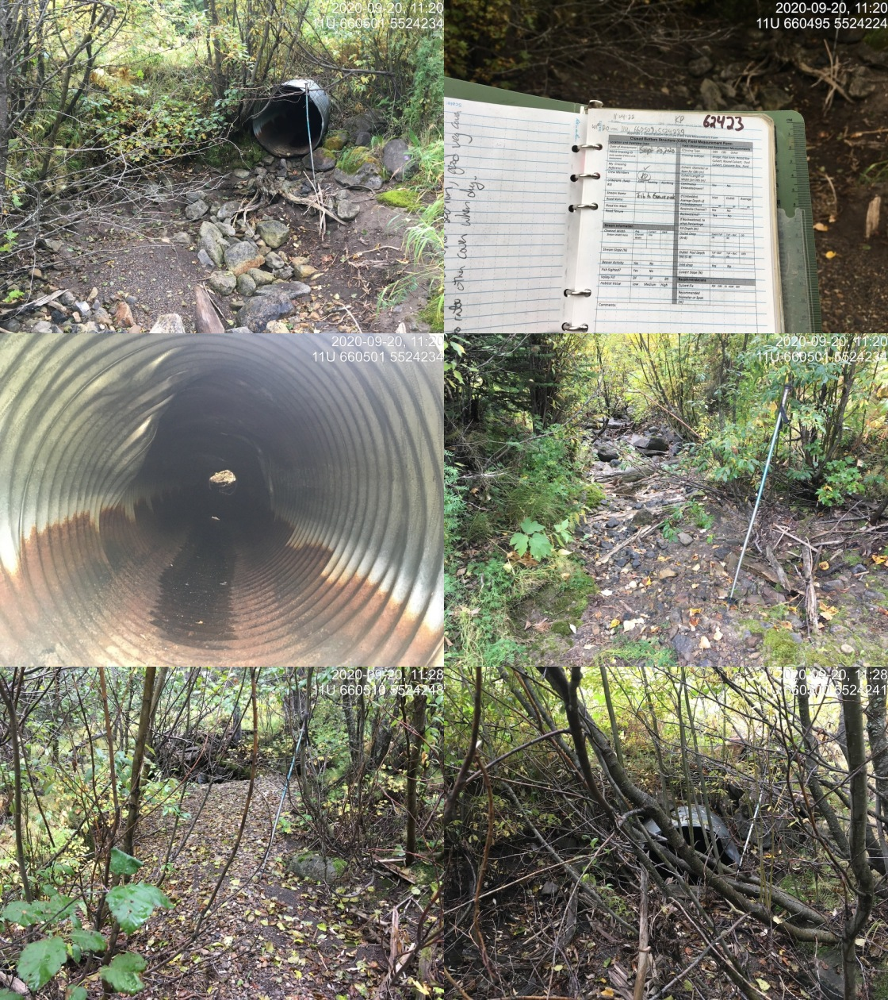

Appendix - Crossing 62423
Grave Creek FSR - Harriet Lake Creek
Site Location
Crossing 62423 is located on Harriet Lake Creek, approximately 30m upstream from the confluence with Grave Creek and accessed from Grave Creek Forest Service Road. Although the freshwater atlas stream layer mapping incorrectly indicates the subject stream is the mainstem of Grave Creek it is actually a small drainage that joins Harriet Lake Creek which flows primarily from the 6ha Harriet Lake located to the north at an elevation of 2100m approximately 4km upstream of the crossing.
Background
Harriet Lake was stocked with “wild” westslope cutthrout trout five times between 1985 and 2002 (MoE 2020a). Downstream, Grave Creek is known to contain westslope cutthrout trout, rainbow trout and bull trout (MoE 2020b). Two habitat confirmation assessments were conducted downstream on the mainstem of Grave Creek in 2014 at PSCIS crossings 62421 and 62422 (Masse Environmental Consultants Ltd. 2015). Although Heather Lamson - MoE Fisheries Biologist recommended the culverts not be removed to prevent potential hybridization of westslope cutthrout trout with stocked rainbow trout downstream (Masse Environmental Consultants Ltd. 2015), both structures had been replaced with bridges at the time of the surveys. Designs and remediations of these crossings were not recorded in PSCIS. Reassessments of these crossings were conducted by our team in 2020 and results will be loaded to PSCIS. In the field, Lotic Environmental Ltd. field teams were observed conducting two-pass closed site electrofishing in Grave Creek as part of a westslope cutthrout trout population assessment and aquatic monitoring program. Data from the program is uploaded to the Fisheries Information Summary System annually and is made available through the BC Data Catalog (MoE 2020b, 2020d).
Although the modelling of potential habitat upstream of this crossing was considered not accurate due to the incorrect mapping of Grave Creek, during field work planning, PSCIS stream crossing 62423 was ranked as a high priority for follow up with habitat confirmation due to the large size of the modelled stream network upstream (20km) and because it was located on a stream with habitat rated as moderate value by VAST Resource Solutions Inc. (2013). A bridge (PSCIS 62413) is located approximately 1km upstream of the crossing. The habitat confirmation was completed on September 20, 2020. A map of the watershed including areas surveyed is provided in Attachment 1 – Map 082G.124.
Stream Characteristics at Crossing
At the time of the survey, the un-embedded and non-backwatered 0.9m diameter crossing was considered a barrier to upstream fish passage with a pipe length of 12m, a culvert slope of 0.5%, a stream width ratio of 1.6 and an outlet drop of 0.18m (Table 5.19). The stream was dry at the crossing location at the time of the survey.
Stream Characteristics Downstream
The stream was surveyed downstream from the culvert for 30m to Grave Creek. Overall, total cover amount was rated as moderate with overhanging vegetation dominant. Cover was also present as small woody debris and boulders (Table 5.20, Figure 5.20). The average channel width was 1.3m, and the average gradient was 4%. The dominant substrate was cobbles with boulders subdominant. Habitat value was rated as low value due to a lack of flow.
Stream Characteristics Upstream
The stream was surveyed upstream from the culvert in the general location of the mapped Grave Creek streamline for 725m. As Harriet Lake Creek was the primary source of flow for the area and enters the surveyed tributary 150m upstream of the crossing location, flows were very minimal and substrate was primarily fines above its confluence. There was however, a visible channel in this location with a ford (PSCIS 197563) located approximately 600m upstream fo PSCSIS 62423. Overall, total cover amount was rated as moderate with undercut banks dominant. Cover was also present as small woody debris, large woody debris, and boulders (Table 5.20, Figure 5.19). The average channel width was 1.2m, the average wetted width was 0.8m and the average gradient was 4.4%. Harriet Lake Creek gradients modelled at 19% just upstream of the bridge located 1km upstream and too steep for upstream westslope cutthrout passage (>20%) at 2.2km. Habitat value was rated as medium for fry and juvenile westslope cutthrout rearing in Harriet Creek and low in the unnamed tributary mapped as Grave Creek due to a lack of flow.
Structure Remediation and Cost Estimate
Structure replacement with an embedded culvert is recommended to provide access to the habitat located upstream of PSCIS crossing 62423. The cost for the work is estimated at $25000 for a cost benefit of $92000/linear m and $66200/m2.
Conclusion
There is 2.3km of mainstem habitat upstream of crossing 62423 with habitat in the areas surveyed upstream of the crossing rated as medium value. Although the provincial forest tenure road layer does not include Grave Creek FSR, it is likely that it is a tenure road under the responsibility of the Ministry of Forests, Lands, Natural Resource Operations and Rural Development. The crossing was ranked as a moderate priority for proceeding to design for replacement with an open bottomed structure due to the low water conditions and steep gradients upstream in Harriet Lake Creek.
| Location and Stream Data |
|
Crossing Characteristics | – |
|---|---|---|---|
| Date | 2020-09-20 | Crossing Sub Type | Round Culvert |
| PSCIS ID | 62423 | Diameter (m) | 0.9 |
| External ID | NA | Length (m) | 12 |
| Crew | KP, AI | Embedded | No |
| UTM Zone | 11 | Depth Embedded (m) | NA |
| Easting | 660508 | Resemble Channel | No |
| Northing | 5524239 | Backwatered | No |
| Stream | Harriet Lake Creek | Percent Backwatered | NA |
| Road | Grave Creek FSR | Fill Depth (m) | 0.3 |
| Road Tenure | Unknown | Outlet Drop (m) | 0.18 |
| Channel Width (m) | 1.44 | Outlet Pool Depth (m) | 0.6 |
| Stream Slope (%) | 4 | Inlet Drop | Yes |
| Beaver Activity | No | Slope (%) | 0.5 |
| Habitat Value | Low | Valley Fill | Deep Fill |
| Photos:  |
| Location | Length Surveyed (m) | Channel Width (m) | Wetted Width (m) | Pool Depth (m) | Gradient (%) | Total Cover | Habitat Value |
|---|---|---|---|---|---|---|---|
| Downstream | 30 | 1.3 |
|
|
4.0 | moderate | low |
| Upstream | 725 | 1.2 | 0.8 | 0.2 | 4.4 | moderate | medium |
Figure 5.19: Typical habitat downstream of PSCIS crossing 62423.
Figure 5.20: Typical habitat upstream of PSCIS crossing 62423.